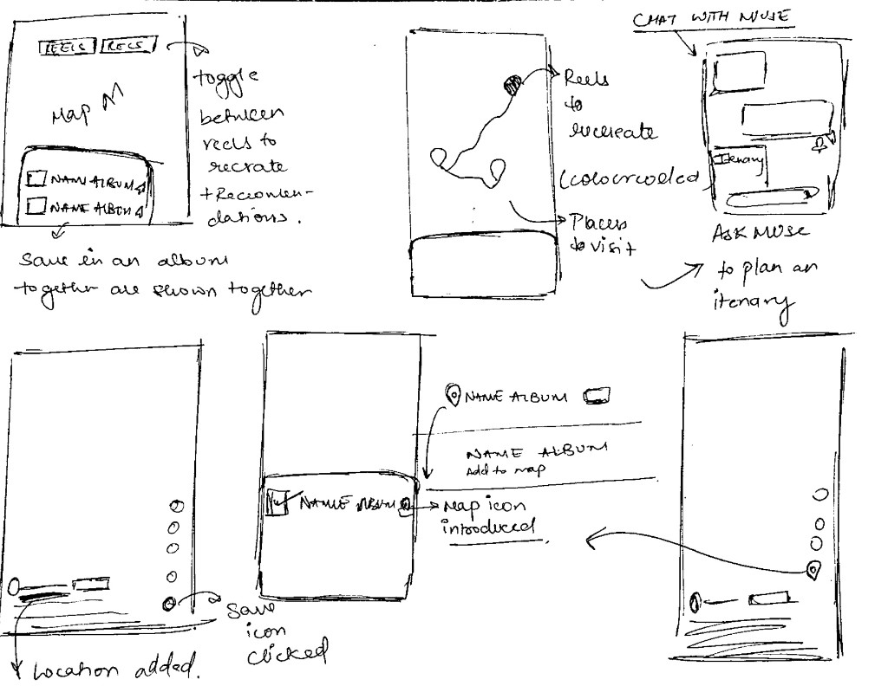

I designed Plan, then shared it publicly
The pitch: Instagram is already where people discover places they want to visit. Plan let them pin location-tagged Reels to their personal Instagram Map, so travel inspiration stayed connected to the places behind it. See the full version 1 case study →
After posting about it and iterating in public, this is the feedback that kept coming back.
How would this actually work inside Instagram, and what would it cost?
Learning how Instagram works
That question sent me back to research. I watched a recent interview with Adam Mosseri, the head of Instagram, and read the announcement for the map launch. I wanted to understand what Instagram is trying to do with the map, and whether Plan belonged there at all.
What I took away
Build on what people already do
People already find places in Reels, save them, send them to friends, and use location tags. A useful feature would connect those habits.
Stick to what Instagram is good at
Visual discovery, creator content, and recommendations from friends. Navigation, routes, and booking already live in other apps.
The map is about connection
The map launched as a way to keep up with friends and see what's happening nearby. Personal inspiration should feel like it belongs there too.
Creators and friends both matter
Instagram has to work for creators and for people who show up to keep up with friends. Keeping up with friends is a core driver, so a feature needs a clear payoff for both.
Once I understood Instagram better, the gap got clearer
Version 1 started from buried saves. After looking at how Instagram works, the sharper problem was the gap between discovering something and eventually visiting it.
Saved travel Reels get buried among hundreds of other posts, so people can't find them later when it's time to plan.
Travel inspiration is easy to discover, but difficult to act on later. Discovery and real-world exploration are disconnected.
Getting ideas on paper, then focusing the bet
The broader question was: how might Instagram make the places people discover through Reels easier to organize, revisit, and experience? I sketched a few directions, then weighed each against what Instagram is actually good at.
Places to Go
Turn saved travel Reels into places on a personal or collaborative map.
Connected saves to geography, but full itineraries and routing would turn Instagram into a travel planner. Collaborative maps stayed interesting for later.
Reels to Make
Pin Reels someone wants to recreate at a specific place.
Fun link between Maps and creation, but a lot of Reels can be remade anywhere. The clearer opportunity was helping people act on travel inspiration.
Location-based travel inspiration
Preserve the inspiration, connect it to a place, and surface it again when a visit becomes relevant.
Fits Instagram's strengths: visual discovery, creator content, location tags, and the map. A personal map plus nearby reminders.

Help people remember the places they already want to experience.
How it works
Creators tag places. People pin what they want to visit. Instagram brings that inspiration back when they are nearby.
-
Creator
Posts a Reel and tags the place
The location can be a single attraction or a whole region.
-
Viewer
Pins it to their map
They find a place worth visiting and save the Reel with its location.
-
Map
It stays tied to that place
Ready to open again when they’re planning a trip or just exploring.
-
Nearby
A reminder when they’re close
Instagram can surface the saved place when it becomes relevant again.
A pin can be a building or a whole country
Pins can sit at different levels of detail. Grand Central can be a landmark, a restaurant can be an address, and the Northern Lights can be a whole region.
A reminder when you're close
Someone saves a Reel about the Hershey factory. Months later they're driving through the area. The reminder uses the black-and-white language of Maps notifications.
A Reel you saved is close to where you are. Open your map if you want to take a look.
Black-and-white Maps glass, matching current Instagram Maps notification style.
Suggestion tone
Copy stays in the range of “you might find this interesting.”
Maps visual language
Black-and-white styling, so these feel distinct from likes, comments, and other Instagram alerts.
Triggered by place
They show up when someone is close to a place they already saved. Distance follows the pin’s scale, from a single attraction up to a region.
Optional follow-through
The notification opens the map. From there, someone can visit, mute the place, or turn reminders off.
Why a map?
Folders are fine for sorting. Geography is what makes these saves useful later.
Stays inside Instagram’s strengths
- Visual discovery
- Remember places
- Rediscover nearby
- Itineraries & routing
- Navigation
- Booking
The bets I’d pressure-test
The real question is whether people rediscover and act on inspiration they’d otherwise forget. Here’s what I’d put under pressure first.
Will people pin travel Reels and come back through the map?
I’d look for pin rates on eligible Reels, and how often people reopen those pins from Maps.
If tags are thin start with what creators already add, and treat better tagging as a later lever.
Do nearby reminders feel useful, or just noisy?
I’d look for opens next to mute and dismiss rates, plus whether people keep the feature on.
To keep them useful one reminder per area, match distance to the pin’s scale, and make opt-in and mute easy.
Does a reminder lead somewhere real?
I’d look for map opens, exploration around the place, and reported visits — counted separately from a tap on the notification.
A hard call is telling a real visit apart from someone just browsing the map.
Is Pin clearly about places someone might visit?
I’d look for whether people understand Pin as location-worthy inspiration, and opt into nearby.
If every tagged Reel counts the map gets noisy. Keep Pin focused on places worth going to.
Still open: Pin vs Add to Map, when a reminder is worth sending, and how far out by pin scale.
Help people turn travel inspiration into real-world experiences.
Pin places from Reels. Rediscover them before a trip or when nearby.